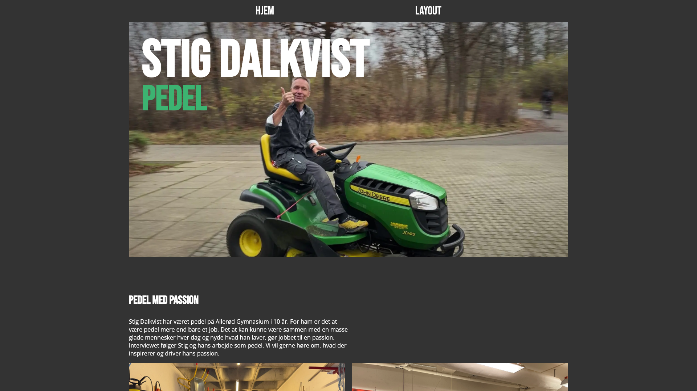

Tema 2 - Grundlæggende HTML
Under dette forløb, fik vi hver tildelt en stilart som vi skulle arbejde med. Jeg fik
stilarten futuristisk design. Formålet med opgaven var at lave et site der beskriver og
viser stilarten. Jeg fokuserede meget på fonten og farvevalget for bringe stilarten
frem.
Da vi skulle lave opgaven i HTML, fulgte jeg et givent layoutdiagram under kodningen. I
forløbet lærte vi om styling i CSS og hvordan billeder skulle tilpasses. Der var sat
stort fokus på at siden var responsiv og derfor lærte vi at gøre brug af grid, flexbox
og mediaqueries.
Vi lærte om forskellige stilarter og det har hjulpet mig til fremtidige valg når det
kommer til design af hjemmesider. Hvis jeg skulle lave om på noget, ville det nok være
valget af billeder og farver. Selvom siden viser stilarten kunne jeg godt have været
mere bevidst omkring mit valg af billeder og farver.
Forløbet har været en god start på denne uddannelse da jeg fra starten er blevet gjort
opmærksom på hvor vigtigt et layoutdiagram er. Det hele er meget lettere når man har
planlagt forud.

Tema 3 - Grundlæggende UX
Prototype
I dette forløb fokuserede vi på design af prototyper i Adobe XD. Jeg lærte om
prototype-design, og benyttede mig af Adobe Xd. Her lavede jeg en interaktiv prototype,
så jeg kunne se hvordan sitet ville fungere i virkeligheden. UX står for User Experience
og til det skulle vi lave idegenerering af et produkt og skabe et brand på baggrund af
markedsresearch og spørgeskemaer. Målet med forløbet var også at kunne skabe en god
brugeroplevelse og et troværdigt brand gennem copy og microcopy. Efter dette tema er jeg
blevet mere opmærksom UX på de hjemmesider jeg besøger og lægger mærke til hvilke
metoder der bliver gjort brug af. Jeg fik et godt kendskab til Adobe XD, og er tilfreds
med de produkter jeg fik lavet. Hvis jeg havde haft mere tid, ville jeg dog have valgt
nogle andre farver.
Pitch
Da prototypen var afleveret, skulle vi lære at pitche vores ideer og resultater til
hinanden. Jeg fokuserede meget på at formidle både min research og de testresultater jeg
fik. Det var godt at høre de andres præsentationer og se hvordan deres data blev brugt.
Jeg har fået åbnet mine øjne for hvilken forskel det kan gøre at lave analyse af sin
målgruppe og teste sit design. Det kan også ses i de senere forløb hvor jeg har gjort
brug af analyse og spørgeskemaer.

Tema 4 - Animation
Animationsforløbet startede med undervisning om konceptudvikling og grafik. Jeg skulle
udvikle mit eget spil med figurelementer og baggrunde, der stilmæssigt skulle have en
rød tråd hele vejen. Jeg lavede grafikken i Adobe Illustrator ved hjælp af forskellige
former, og fik i den forbindelse et godt kendskab til illustrators mange tools.
Da jeg havde det endelige design på plads, tilføjede jeg animation via JavaScript og CSS
på mine game elements og knapper. Jeg lærte at tilføje en timer og point til spillet,
for at gøre det muligt at vinde og tabe spillet. Jeg blev introduceret til, State
Machine og Activity diagrammer, som jeg brugte til at planlægge min kodning.
Under dette forløb lærte jeg meget om grafik og stile, såsom flat design. Jeg ville dog
gerne have brugt mere tid på design af min timer og mit scoreboard. Jeg lærte også at
redigere og optimere lyd så jeg kunne få forskellige effekter i mit spil. Til
baggrundsmusikken gjorde jeg brug af støjreduktion samt at skrue ned for lyden.
Ser jeg tilbage på spillet kunne jeg have arbejdet med mere avanceret lyd og
lydeffekter, og analyseret mit styletile. Jeg burde også have fundet mere
stilinspiration og opnået et mere sammenhængende spil.

Tema 5 - Grundlæggende indhold
Pilot
I dette projekt gik vi i dybden med videoproduktion, og lærte meget om vinkler,
perspektiver og tools i Premiere Pro. Vi skulle interviewe en person med en passion og
der blev der lagt stort fokus på at få lavet nogle gode spørgsmål til interviewet. Efter
interviewet havde jeg mange minutters indhold og skulle derfor skære det ned til ét
enkelt minut. Det var noget af en udfordring da man fik en masse gode citater, men måtte
skære dem fra. Jeg føler jeg endte med et godt produkt der beskriver passionen. Når jeg
kigger tilbage på denne opgave, ville jeg gerne have brugt mere tid på b-rolls og lyd-
og lysindstillinger.

Gå til site
Redesign
Her skulle jeg forsøge at re-designe en hjemmeside. Vi skulle producere billeder og
videoer, som skulle passe ind i sitets nye stil. Vi fokuserede derfor meget på at ramme
det indtryk som virksomheden manglede. Jeg analyserede det eksisterende site, og
udviklede et stylesite til den nye version. Vi lavede en kort præsentationsvideo, der
viste virksomheden fra en interessant og ny vinkel. Dette gjorde vi med b-rolls og andre
effekter. Billeder og video blev redigeret i samme stil og gav derfor både indhold og
site en sammenhæng. Vi legede med forskellige layouts og effekter på sitet, da vi havde
frie tøjler under dette projekt. Det fik os til at tænke mere selvstændigt og kreativt,
hvilket også blev overført til kodningen.

Tema 6 - Portfolio eksamen
Denne opgave er med til at vise at jeg har tilegnet mig læringsmålene for 1. semester. Til denne opgave har jeg fokuseret på at få så meget af min viden og færdighed med fra de tidligere forløb. Set tilbage til da jeg startede semesteret, er jeg kommet en lang vej på et halvt år. Jeg føler at jeg har fået meget viden og en god forståelse for både kodning men også designvalg og processen fra start til det endelige produkt.